Does the pooled mixture density network that combines every component the earlier experiments supported beat its parts and the references?
Pretraining on past weather lowered the forecast error at the six signed-MW and eight MVA-only
Primaries, and the Primary embedding mattered far more than pretraining. The continuous ranked
probability score (CRPS; lower is better) fell by 0.050 points of effective capacity (the error as
a percentage of each Primary substation's effective capacity) at the six Primaries whose meters
report signed megawatts (the "signed-MW six") and by 0.124 at the eight Primaries whose meters
report only apparent power in megavolt-amperes (MVA; the "MVA-only eight"). A third group, D15 and
D18, holds the two Primaries with a short history. Removing the Primary embedding raised the CRPS
by about 0.85 at both the signed-MW six and the MVA-only eight. The MVA-only eight cleared the
registered bar, which is the -0.03 threshold written in the plan before any score was read. The
interval for the signed-MW six ended at -0.021, short of that bar. The assembled network scored
lower CRPS than the monthly XGBoost recipe (S0M) and than BG2 (the production-style blend of
XGBoost, analogue, and pooled-by-type models) at the signed-MW six and the MVA-only eight, and
higher than BG2 at D15 and D18. The verdict is partly supported: the hypothesis that pretraining
lowers the CRPS and that removing the Primary embedding or the widening makes it worse held for
pretraining at the MVA-only eight, probably held at the signed-MW six, and held for the embedding.
Widening did not lower the CRPS. Pretraining is a candidate for a numbered release of the
production forecast.
The question was whether combining every component that earlier experiments supported in one pooled neural network beats leaving one out, and beats the reference forecasts. The network predicts 11 quantiles of Primary substation demand for the next 14 days from the weather ensemble (ECMWF ENS, the European Centre for Medium-Range Weather Forecasts ensemble). The components are one neural network shared by all Primaries with an 8-wide embedding per Primary, summaries of the ensemble's mean and spread, hand-made calendar columns, monthly refits, and a final widening of the bands by 1.15. The one component added here is pretraining, first tested in experiment 418. The mixture density network first learns from ERA5 (a reanalysis, an estimate of past weather) and CAMS (the Copernicus Atmosphere Monitoring Service, which supplies estimates of past solar radiation), and then every weight is fine-tuned on ensemble rows.
Three networks were refitted at 12 monthly folds and compared with four references. The folds
are forecast origins from 2025-07 to 2026-06, each network trained only on data before its month,
with five random seeds each. The references were scored on the half-hours that all arms forecast.
The three networks are R, trained on ensemble rows only; A, pretrained then fine-tuned; and
A-noemb, the same as A without the Primary embedding. The references are the monthly XGBoost
recipe (S0M), BG2 (a blend of XGBoost, analogue, and pooled-by-type models), manual_heuristic,
and climatology. Scores are the CRPS at days 1 to 10, in points of effective capacity, averaged
over the Primaries of each group with equal weight. The signed-MW six are the Primary substations
whose meters record the direction of flow. The MVA-only eight are the Primary substations whose
meters record apparent power without a sign. D15 and D18 are the two Primaries with a short
history, reported separately.
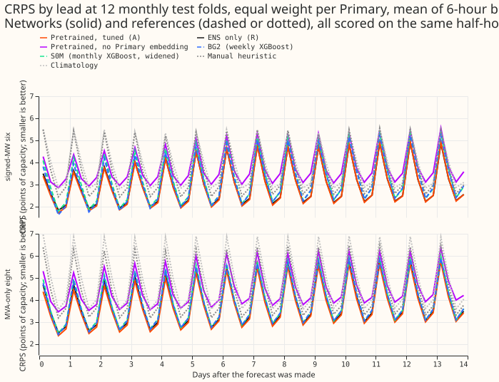
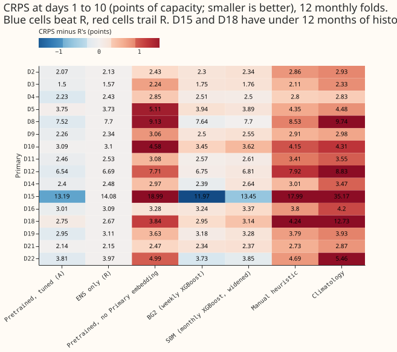
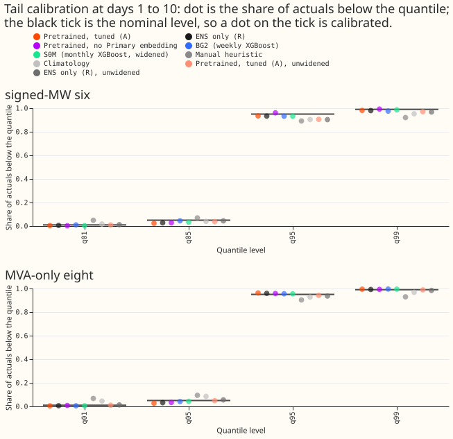
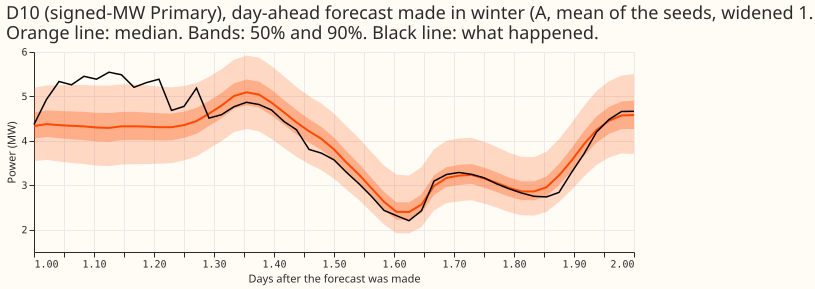
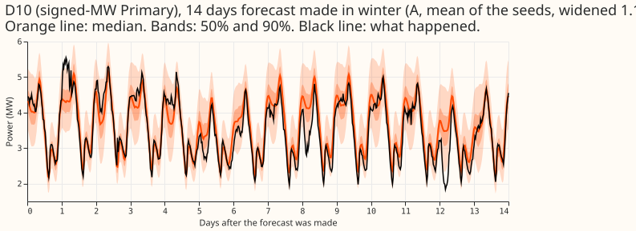
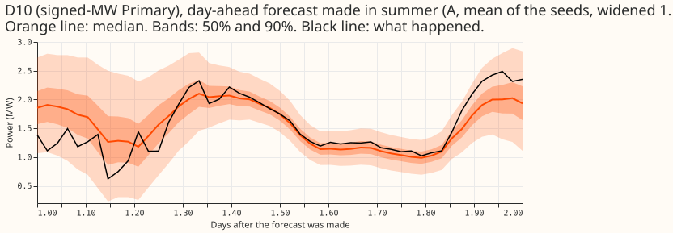
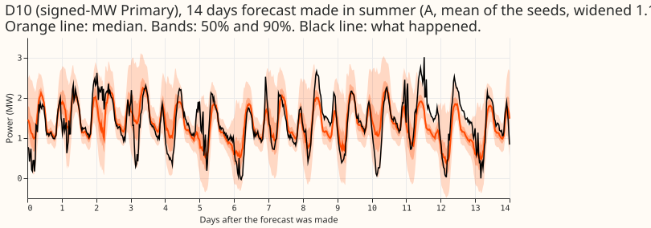
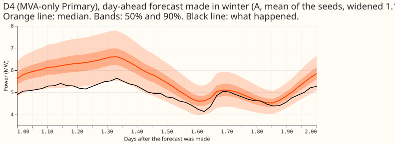
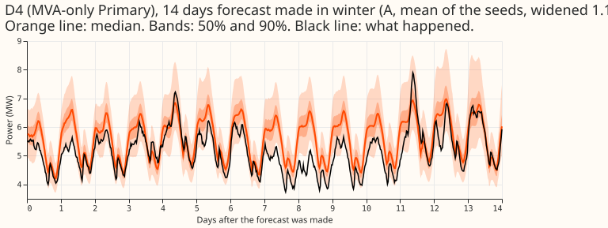
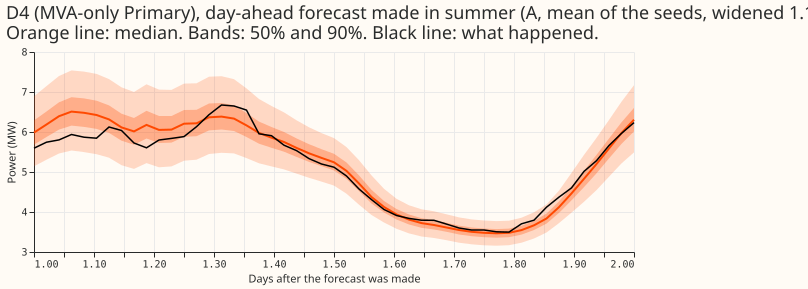
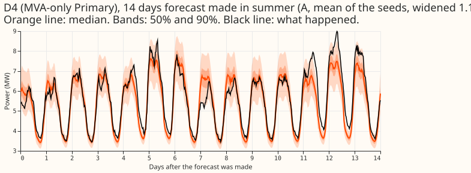
Results
Arms
R(reference network). Pooled plain neural network with the Primary embedding, trained on ensemble rows only, widened by 1.15.A(assembly).Rafter pretraining on ERA5-and-CAMS rows, with every weight fine-tuned on ensemble rows at a learning rate of 2e-4, widened by 1.15.A_rawis the same forecast without the widening.A-noemb.Abuilt on experiment 406's neural network with no Primary embedding, in both the pretraining and the fine-tuning stage.S0M. The monthly XGBoost recipe, armS0Mof experiment 389, read through experiment 397's references and scored both raw and widened by 1.15.BG2. The blend of XGBoost, analogue, and pooled-by-type models of experiment 87.manual_heuristicandclimatology. The two naive forecasts from the project's evaluation code.
Every neural network was refitted with the D15 and D18 start cut and the flagged exact-zero drop. Seeds are 0 to 4 for every fitted arm.
Absolute scores
A has the lowest CRPS of the seven at the signed-MW six and the MVA-only eight, and BG2 has the
lowest at D15 and D18. The table gives the CRPS at days 1 to 10 with the widening of 1.15. All
arms and references share 2,922,247 half-hours over leads of 0.5 to 336 hours. The days 1 to 10
subset of those half-hours holds 826,396 at the signed-MW six, 1,103,553 at the MVA-only eight, and
169,766 at D15 and D18, and the table scores that subset.
| Arm | Signed-MW six | MVA-only eight | D15 and D18 |
|---|---|---|---|
R |
2.878 | 3.719 | 8.373 |
A |
2.828 | 3.594 | 7.970 |
A-noemb |
3.680 | 4.431 | 11.413 |
S0M (widened) |
3.115 | 3.826 | 8.291 |
| BG2 | 3.016 | 3.774 | 7.457 |
manual_heuristic |
3.605 | 4.429 | 11.112 |
climatology |
3.831 | 4.866 | 23.951 |
The unwidened S0M scores 3.111, 3.818, and 8.309. Figure 2 gives the CRPS per Primary.
Minimum detectable effect
The minimum detectable effect (MDE) is 0.0368 points, a lower bound. The MDE is the standard
deviation over the 12 folds of the difference in signed-MW six CRPS between the mean of R seeds 0
to 2 and the mean of R seeds 3 and 4 (0.0520), divided by the square root of two. A contrast
smaller than 0.0368 is inside the noise. Experiment 423 uses twice the standard deviation divided by
the square root of two, which would be about 0.074 here (experiment 419 uses twice the standard
deviation, 0.0738). The reading that C1 at the signed-MW six (-0.050) is larger than the MDE
depends on the lower-bound definition used here. Under experiment 423's convention, C1 at the
signed-MW six would be inside the noise.
Contrasts
Pretraining lowered the CRPS at the signed-MW six, the MVA-only eight, and D15 and D18, the Primary embedding is worth far more, and the assembly beat the monthly XGBoost recipe. The table gives treatment minus reference, at days 1 to 10, with the month-block bootstrap interval (20,000 resamples, level 98.75%, a Bonferroni correction over four contrasts). D15 and D18 are report-only. C3 is the unwidened forecast minus the widened forecast, so a positive C3 means that widening lowered the CRPS.
| Contrast | Signed-MW six | MVA-only eight | D15 and D18 (report-only) |
|---|---|---|---|
C1: A minus R |
-0.050 (-0.078 to -0.021) | -0.124 (-0.219 to -0.048) | -0.368 (-0.567 to -0.004) |
C2: A-noemb minus A |
+0.851 (+0.723 to +0.999) | +0.837 (+0.731 to +0.944) | +3.272 (+1.191 to +5.527) |
C3: A_raw minus A |
+0.004 (-0.009 to +0.025) | -0.011 (-0.016 to -0.006) | -0.003 (-0.074 to +0.097) |
C4: A minus S0M (both widened) |
-0.287 (-0.402 to -0.171) | -0.232 (-0.376 to -0.115) | -0.326 (-0.724 to +0.047) |
- C1 is negative in 11 of 12 folds at both the signed-MW six and the MVA-only eight. The per-fold differences at the signed-MW six run from -0.102 to +0.018. At the MVA-only eight they run from -0.409 to +0.011.
- C2 is positive in all 12 folds at both the signed-MW six and the MVA-only eight. The smallest per-fold difference is +0.571 at the signed-MW six and +0.557 at the MVA-only eight.
- The contrasts are pooled over half-hours. The intervals resample months and do not include the variation between seeds.
Predictions
- P1 held.
AbeatRby 0.050 at the signed-MW six (predicted 0.03 to 0.10) and by 0.124 at the MVA-only eight (predicted 0.08 to 0.20). - P2 held.
A-noembwas worse thanAby +0.851 at the signed-MW six and +0.837 at the MVA-only eight, within the predicted 0.5 to 1.0 points. - P3 held at the signed-MW six and failed at the MVA-only eight. Widening the bands by 1.15 was predicted to lower the CRPS by less than 0.03 points and to move q95 coverage (the share of actual values below the 95th-percentile forecast) towards 0.95. At the signed-MW six, widening changed the CRPS by -0.004, inside the noise, and moved q95 coverage from 0.905 to 0.935. At the MVA-only eight, widening changed the CRPS by +0.011, which contradicts the predicted direction. The size is small, about a third of the 0.03 bound. The q95 coverage moved from 0.941 to 0.963, past 0.95.
- P4 held.
Ascored lower thanS0Mby 0.287 at the signed-MW six and 0.232 at the MVA-only eight, both intervals wholly below zero.
Tails
Widening by 1.15 moves q95 and q99 coverage towards nominal at the signed-MW six and at D15 and
D18, and overshoots at the MVA-only eight. It also pushes q01 and q05 coverage further under
nominal. A has lower pinball loss than R at the same widening at all three groups. The tables
give coverage (nominal 0.95 and 0.99) and pinball loss at q95 and q99, days 1 to 10, mean over the
Primaries of each group. The q01 and q05 coverage of A_raw at the signed-MW six is 0.009 and
0.038, and of A is 0.005 and 0.023, so the widening pushes the lower tail further under its
nominal level. The q95 and q99 coverage of A is closer to nominal than that of R at the
signed-MW six and at D15 and D18, but not at the MVA-only eight. There A has 0.963 and 0.994
against 0.959 and 0.992 for R, both above nominal.
Signed-MW six (826,396 half-hours):
| Arm | Cov q95 | Cov q99 | Pin q95 | Pin q99 |
|---|---|---|---|---|
A_raw |
0.905 | 0.970 | 0.809 | 0.279 |
A |
0.935 | 0.981 | 0.779 | 0.260 |
R_raw |
0.903 | 0.967 | 0.822 | 0.290 |
R |
0.933 | 0.979 | 0.795 | 0.269 |
S0M_raw |
0.909 | 0.980 | 0.948 | 0.386 |
S0M |
0.932 | 0.986 | 0.928 | 0.392 |
MVA-only eight (1,103,553 half-hours):
| Arm | Cov q95 | Cov q99 | Pin q95 | Pin q99 |
|---|---|---|---|---|
A_raw |
0.941 | 0.988 | 0.911 | 0.243 |
A |
0.963 | 0.994 | 0.932 | 0.253 |
R_raw |
0.936 | 0.984 | 0.946 | 0.256 |
R |
0.959 | 0.992 | 0.961 | 0.258 |
S0M_raw |
0.934 | 0.991 | 0.977 | 0.332 |
S0M |
0.955 | 0.995 | 0.987 | 0.358 |
D15 and D18 (169,766 half-hours):
| Arm | Cov q95 | Cov q99 | Pin q95 | Pin q99 |
|---|---|---|---|---|
A_raw |
0.904 | 0.976 | 2.231 | 0.868 |
A |
0.938 | 0.984 | 2.126 | 0.808 |
R_raw |
0.877 | 0.963 | 2.630 | 0.987 |
R |
0.913 | 0.977 | 2.427 | 0.862 |
S0M_raw |
0.866 | 0.986 | 2.768 | 0.717 |
S0M |
0.896 | 0.990 | 2.535 | 0.689 |
- At the signed-MW six, the widening lowered the q95 and q99 pinball loss of
A(0.809 to 0.779 and 0.279 to 0.260). At the MVA-only eight it raised both (0.911 to 0.932 and 0.243 to 0.253), because the unwidened q95 coverage was already 0.941. - On sunny low-demand half-hours the bands are too wide. The q95 coverage of
Ais 0.995 at the signed-MW six (35,283 half-hours) and 0.987 at the MVA-only eight (46,541 half-hours).
Cold winter nights, sunny half-hours, and Economy 7
A has lower CRPS than R in all three slices at all three groups. The table gives the CRPS
at days 1 to 10 with the widening of 1.15 for A, R, S0M, BG2, and manual_heuristic. Cold
nights are the half-hours the evaluation code flags as cold nights, sunny half-hours are those it
flags as sunny, and the Economy 7 step is the overnight cheap-rate tariff switch.
| Slice and group | A |
R |
S0M |
BG2 | manual_heuristic |
|---|---|---|---|---|---|
| Cold nights, signed-MW six | 4.290 | 4.446 | 4.953 | 4.714 | 6.177 |
| Cold nights, MVA-only eight | 3.213 | 3.315 | 3.756 | 3.662 | 5.022 |
| Cold nights, D15 and D18 | 5.850 | 5.934 | 7.226 | 5.936 | 9.291 |
| Sunny half-hours, signed-MW six | 3.814 | 3.831 | 4.183 | 4.157 | 4.824 |
| Sunny half-hours, MVA-only eight | 4.979 | 5.155 | 5.198 | 5.158 | 6.167 |
| Sunny half-hours, D15 and D18 | 8.966 | 9.410 | 9.492 | 8.611 | 12.235 |
| Economy 7 step, signed-MW six | 2.056 | 2.115 | 2.171 | 2.098 | 2.552 |
| Economy 7 step, MVA-only eight | 2.552 | 2.622 | 2.637 | 2.666 | 3.036 |
| Economy 7 step, D15 and D18 | 7.404 | 7.965 | 7.654 | 6.780 | 10.184 |
- On cold nights
Ais the lowest of the five at the signed-MW six and the MVA-only eight. At D15 and D18Ais 0.086 lower than BG2 (5.850 against 5.936). - On sunny half-hours the margin of
AoverRat the signed-MW six is 0.017, smaller than the MDE, though no contrast test was run on this slice. BG2 is lower thanAat D15 and D18 in the sunny and Economy 7 slices.
Avoidable curtailment cost
At the headline limit, A has the lowest avoidable curtailment cost of the arms with a printed
total, about 37% below manual_heuristic. The cost is defined only for the signed-MW six. The
definition below comes from the scorer's code. The cost is the cost of a forecast minus the cost of
a perfect forecast on the same half-hours, at leads of 12 to 36 hours, scored for each Primary
substation separately at a price of £2000 per MWh for curtailed energy. The limit is a fraction of
each Primary's maximum flow in the 12 or more months before the scored period. The printed totals
below are for the six Primaries together, in millions of pounds over the 12 folds.
| Limit as a fraction of earlier maximum | A |
A_raw |
R_raw |
S0M |
BG2 | manual_heuristic |
climatology |
|---|---|---|---|---|---|---|---|
| 0.5 (headline) | 66.5 | 70.8 | 75.4 | 84.6 | 72.9 | 104.9 | 112.5 |
| 0.75 | 22.1 | 25.3 | 27.7 | 32.0 | 24.3 | 37.4 | 41.7 |
| 0.9 | 7.62 | 8.39 | 9.59 | 10.2 | 7.31 | 10.4 | 11.1 |
- The ranking changes with the limit. At 0.9 BG2 (7.31) is below
A(7.62), andA-noembis lower still (6.37 widened), despite its CRPS being 0.85 worse. - The cost of
Rwidened is not shown in the truncated printout, which showsR_rawonly.
Checks
- Independent re-derivation (a fresh Sonnet reviewer, own code). CRPS of
R,A, andA-noemb, C1, and C2 reproduce the printed values to three decimals, with seeds paired in all 12 folds and no scored valid time after 2026-06-30. - The median-forecast error agrees with the CRPS in sign. This check, the next, and the leave-one-out check come from the results reviewer's own code and are not in the printed report. C1 on the median's absolute error is -0.007 MW at the signed-MW six and -0.020 MW at the MVA-only eight, and C2 is +0.107 MW at both. The stored forecasts hold quantiles only, so the median stands in for the mean forecast.
- Median minus the mean of the 11 quantiles is small and negative at every Primary of the
signed-MW six (-0.014 to -0.091 MW for
A), so the spread does not shift the forecast. The largest values forAare at D8 (-0.140 MW) and D12 (-0.166 MW), which are outside the signed-MW six. - Leaving one Primary out keeps C1 negative. At the signed-MW six the contrast stays between -0.043 and -0.065 (D10 out: -0.059; D5 out: -0.065), and at the MVA-only eight between -0.113 and -0.141. The gain at the signed-MW six rests on five Primaries: D5 alone is worse with pretraining (+0.023) and D10 is nearly flat (-0.007).
- Audit triggers. C2's interval does not reach zero, so that trigger did not fire. C3 reverses sign at the MVA-only eight, so that trigger fired there: the page does not claim that the widening lowers the CRPS. No other audit trigger fired.
- The 11 of 12 negative folds in C1 are not a second test, because the folds make up the bootstrap's resampling units.
Caveats
S0Mhas no D15 and D18 cut and no flagged-zero drop, and comes from experiment 389. Its gap toAis partly a difference in training rows.- Flagged zeros among the origin lags still reach the neural network at inference, as in experiment 407. The scoring dropped 1,179 actuals that were flagged exact zeros.
- The contrast intervals pool half-hours, and the tables average over Primaries, so a table difference and a contrast can differ slightly.
- The 12 monthly folds (2025-07 to 2026-06) refit every month. The intervals are therefore not interim, but the monthly schedule is not the weekly schedule of production.
- The lead range of 0.5 to 336 hours covers the 1 to 10 days that National Grid Electricity Distribution (NGED) needs.
- Training rows dropped per fold. Every fold drops 68,680 fine-tuning rows and 22,769 pretraining rows for a short history at the start. The flagged exact zeros dropped rise from 808 (2025-07) to 2,929 (2026-04) for fine-tuning and from 257 to 1,087 for pretraining.
- The cut cross-check was not run. No fit without the D15 and D18 cut exists, so the effect of the cut is not sized, and experiment 418's numbers are a guide only.
What to try next
- Candidates to join
Aare those that beatRon the same 12 folds. - Origin-hour training is a candidate robustness variant and was not run. See experiment 422.
- The export gate of experiment 420 was not tested here. That gate controls whether a signed output is exported at MVA-only Primaries.
Data used and where it lives
- Data. The cleaned NGED Primary-substation power series, ECMWF ensemble forecasts for the fine-tuning and the scoring, and ERA5 and CAMS estimates of past weather for the pretraining.
- Schedule. Monthly refits at 12 folds (2025-07 to 2026-06).
- Code.
ml-experiments/00425-best-mdn-architecture-assembly-with-ablations/in this repository. - Saved networks. The experiment's data folder,
work/models/(fine-tuned networks) andwork/pretrained/(pretrained networks), under$DATA_PATH_INTERNAL/ml-experiments/00425-best-mdn-architecture-assembly-with-ablations/.